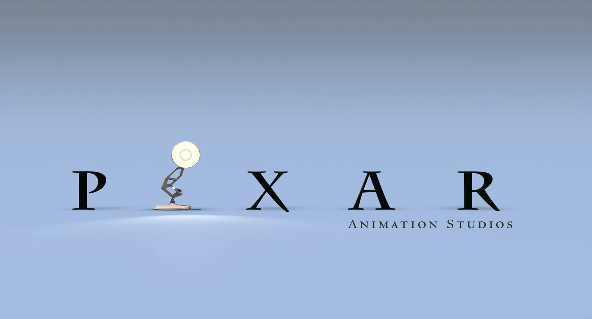
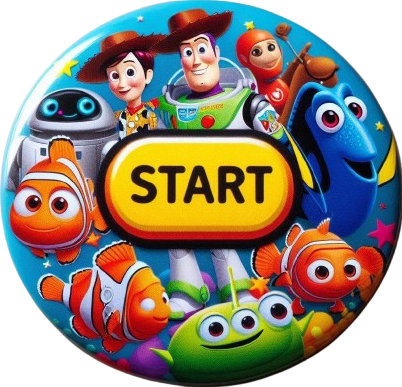

Quem você seria no universo da Pixar?
Descubra seu personagem no universo Pixar!


1. Como você lida com problemas?
A) Encaro de frente, sempre encontro um jeito.
B) Prefiro contar com amigos ou familiares para superar dificuldades.
C) Tento evitá-los ao máximo, mas se for preciso, eu resolvo.
D) Gosto de pensar em soluções criativas e únicas.
2. Qual é a sua maior força?
A) Coragem.
B) Lealdade.
C) Inteligência.
3. Como você se comporta em um grupo?
A) Sou o líder que toma a iniciativa.
B) Sou o apoiador, sempre disposto a ajudar.
C) Prefiro observar e agir conforme necessário.
D) Trago ideias e sugestões novas.
4. O que você faz quando conhece alguém novo?
A) Cumprimento e já começo uma conversa.
B) Sorrio e tento fazer a pessoa se sentir à vontade.
C) Sou mais reservado e espero que a pessoa se aproxime.
D) Fico curioso para saber mais sobre ela.
5. Qual é o seu passatempo favorito?
A) Aventuras e atividades ao ar livre.
B) Passar tempo com amigos e família.
C) Resolver mistérios ou enigmas.
D) Criar ou construir algo.
6. O que você faria se tivesse que proteger algo importante?
A) Lutar até o fim.
B) Chamaria ajuda para garantir que tudo corra bem.
C) Usaria a inteligência para evitar qualquer perigo.
D) Criaria uma estratégia criativa.
7. Qual é o seu maior medo?
A) Falhar quando os outros dependem de mim.
B) Perder alguém que amo.
C) Não ser compreendido.
D) Não conseguir realizar meus sonhos.
8. O que você mais valoriza?
A) Coragem e determinação.
B) Bondade e empatia.
C) Inteligência e conhecimento.
D) Criatividade e originalidade.
9. Quais dessas profissões você escolheria?
A) Líder ou aventureiro.
B) Professor ou conselheiro.
C) Cientista ou detetive.
D) Artista ou inventor.
10. Como você reage quando as coisas não saem como planejadas?
A) Dou um jeito de continuar e sigo em frente.
B) Busco apoio de quem confio.
C) Reflito e penso em uma solução diferente.
D) Tento ver o lado positivo e aprender com o erro.
Enviar resposta